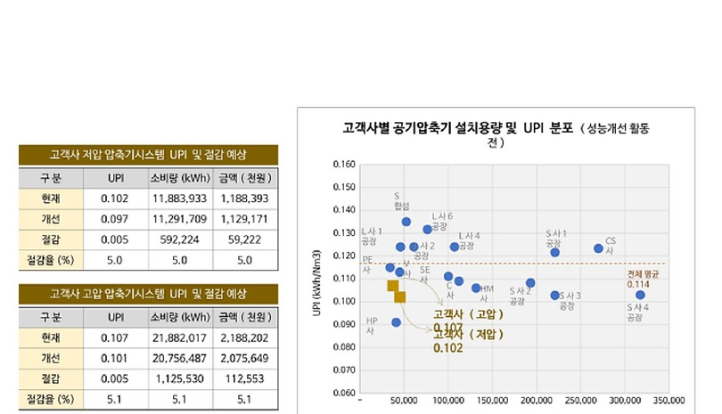
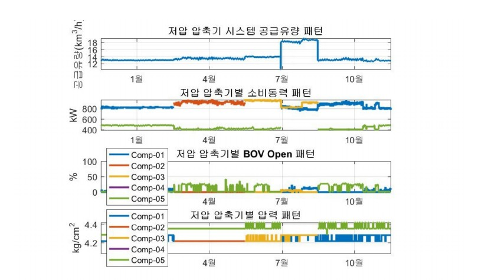

데이터로 찾는 산업·건물 에너지절감 실무 — 72쪽
그림 14-3. 설치용량·UPI Benchmark 분포. [S06] 2019 화학 제조공장 공기압축기 분석자료를 비식별 형태로 복원. 그림 14-4. 저압 시스템 공급압력·BOV·제어 패턴 예시. [S06] 2019 화학 제조공장 공기압축기 분석자료를 비식별 형태로 복원. BENCHMARK | 이미 평균보다 우수한 시스템이라도 Benchmark 는 ‘더 낮으 면 끝’이라는 판정이 아니라 공급압력·가동대수·BOV/IGV 제어에서 다음 운전질 문을 만드는 기준으로 사용한다.


인쇄본 기준 p. 72